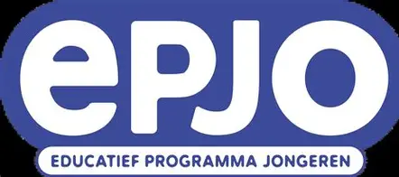
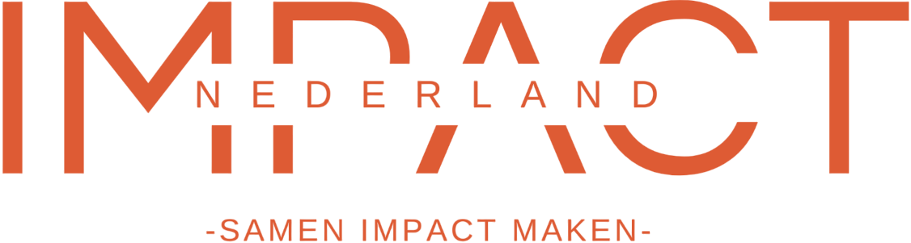
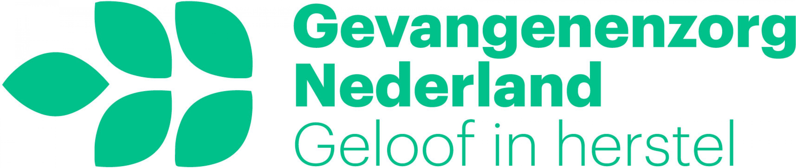
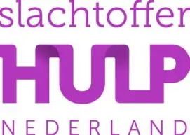
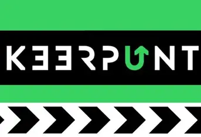
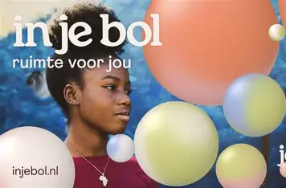

is een interactief lesprogramma ontwikkeld voor de leerlingen van groepen 8 basisschool en het voortgezet onderwijs gericht op jongeren, en zorgen dat jongeren slimme keuzes met educatief én realistisch om te weg te blijven van criminaliteit, misdaadpreventie en het tegengaan van radicalisering.
mbo leerlingen kunnen bijdragen een mini-EPJO-workshopserie op school doen, waarbij het duo samen met docenten korte scenario’s ontwikkelt over sociale druk en consequenties, en deze presenteert aan klasgenoten.

Impact Nederland doet Maatwerkbegeleiding voor jongeren met complexe en meervoudige problematiek. zorgen voor persoonlijke aandacht en passende ondersteuning.
werkt ook met jongeren met complexe problematiek, waaronder:
crimineel gedrag
schooluitval
problematische thuissituaties
mbo studenten kunnen helpem met om een jongeren-podcast waarin je gesprekken voert met ervaringsdeskundigen over wat het betekent om niet in de criminaliteit te stappen.

christelijke vrijwilligersorganisatie die zich richt op het ondersteunen van (ex-)gevangenen, TBS-patiënten en hun familieleden. De organisatie biedt morele steun, begeleiding en helpt bij
werkt ook met: jongeren die al in aanraking zijn geweest met justitie jongeren die ex-gedetineerd zijn gezinnen waarin criminaliteit voorkomt
Studenten kunnen vrijwilligerswerk doen, bijvoorbeeld door brieven te schrijven naar gevangenen, workshops over arbeidsvaardigheden te geven of ondersteuning te bieden bij re-integratie-activiteiten.

biedt gratis emotionele, juridische en praktische ondersteuning aan slachtoffers van misdrijven, verkeersongevallen en andere ingrijpende gebeurtenissen
Toch heel relevant voor jongerencriminaliteit omdat: jongeren vaak slachtoffer én dader kunnen zijn inzicht geeft in de impact van criminaliteit
Studenten kunnen samen met Slachtofferhulp voorlichtingsbijeenkomsten houden op school over de impact van criminaliteit op slachtoffers en preventie stimuleren

landelijke online hulpplatform waar jongeren anoniem kunnen chatten als ze betrokken zijn bij criminaliteit of onder druk worden gezet om strafbare dingen te doen
Studenten kunnen voorlichtingsmateriaal maken over Keerpunt, workshops geven over waar en hoe jongeren hulp kunnen vinden, en dit verspreiden via scholen.

Een hulplijn voor jongeren 18-25 die met problemen, stress of risicogedrag kampen Studenten kunnen campagnes opzetten om deze dienst bekendheid te geven, posters maken, of hulpvragen verzamelen via peer-to-peer gesprekken.